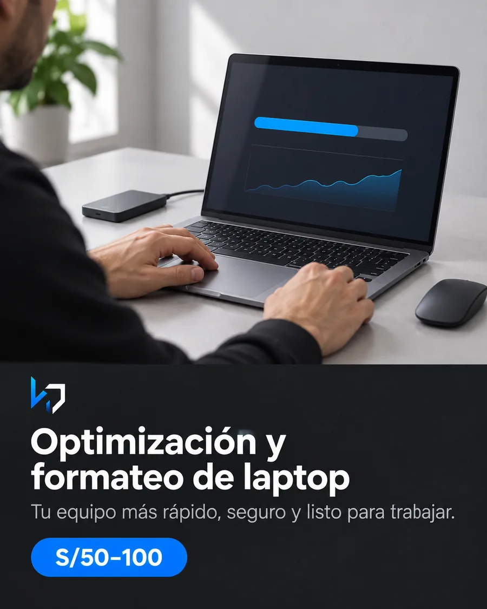
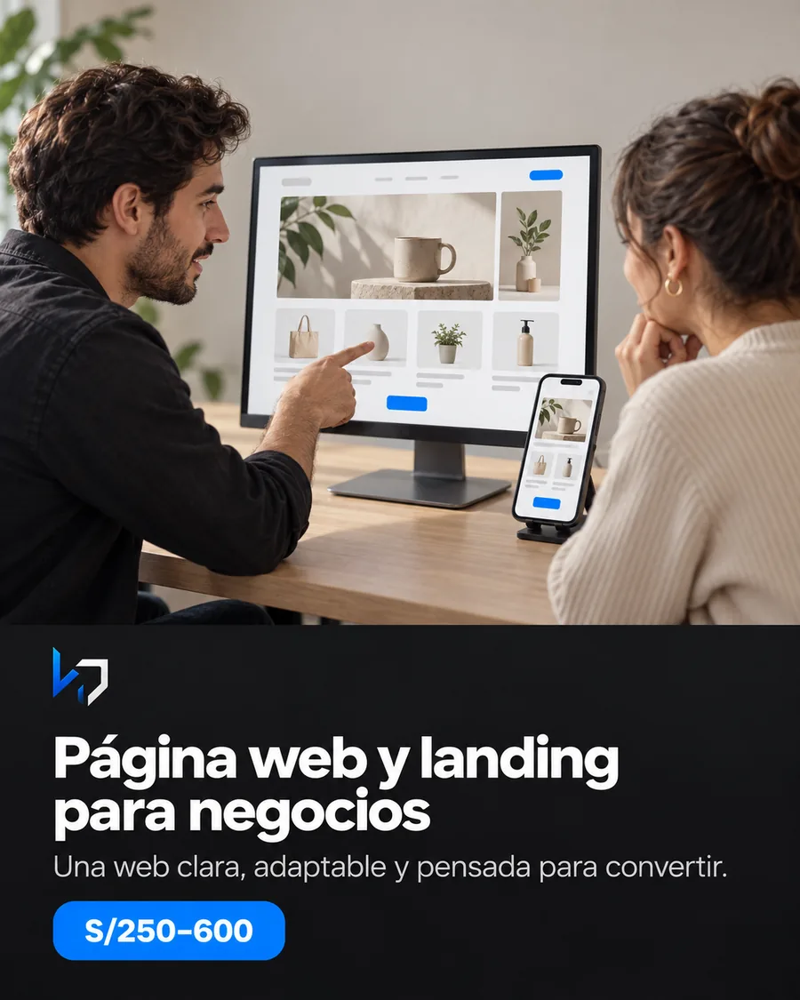
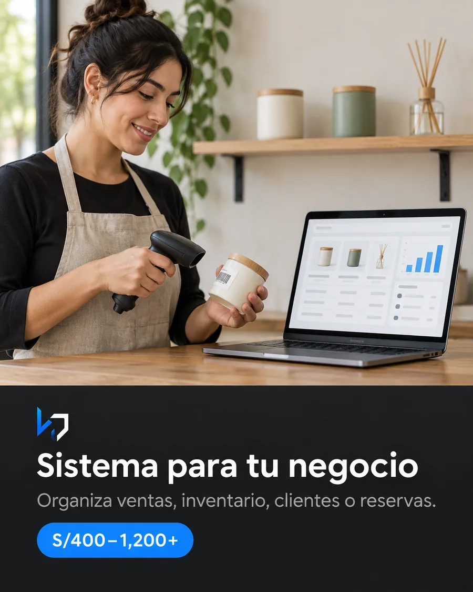
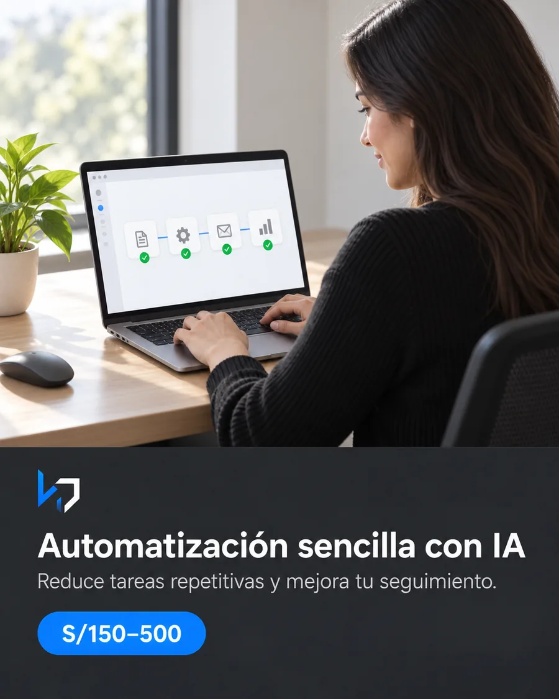
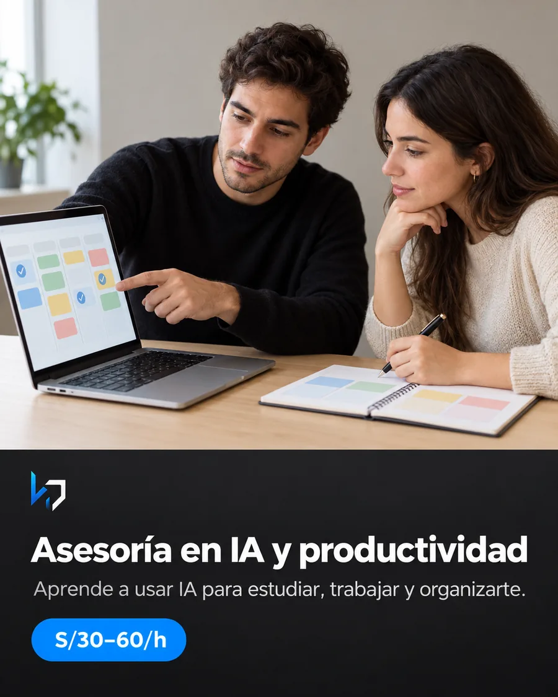
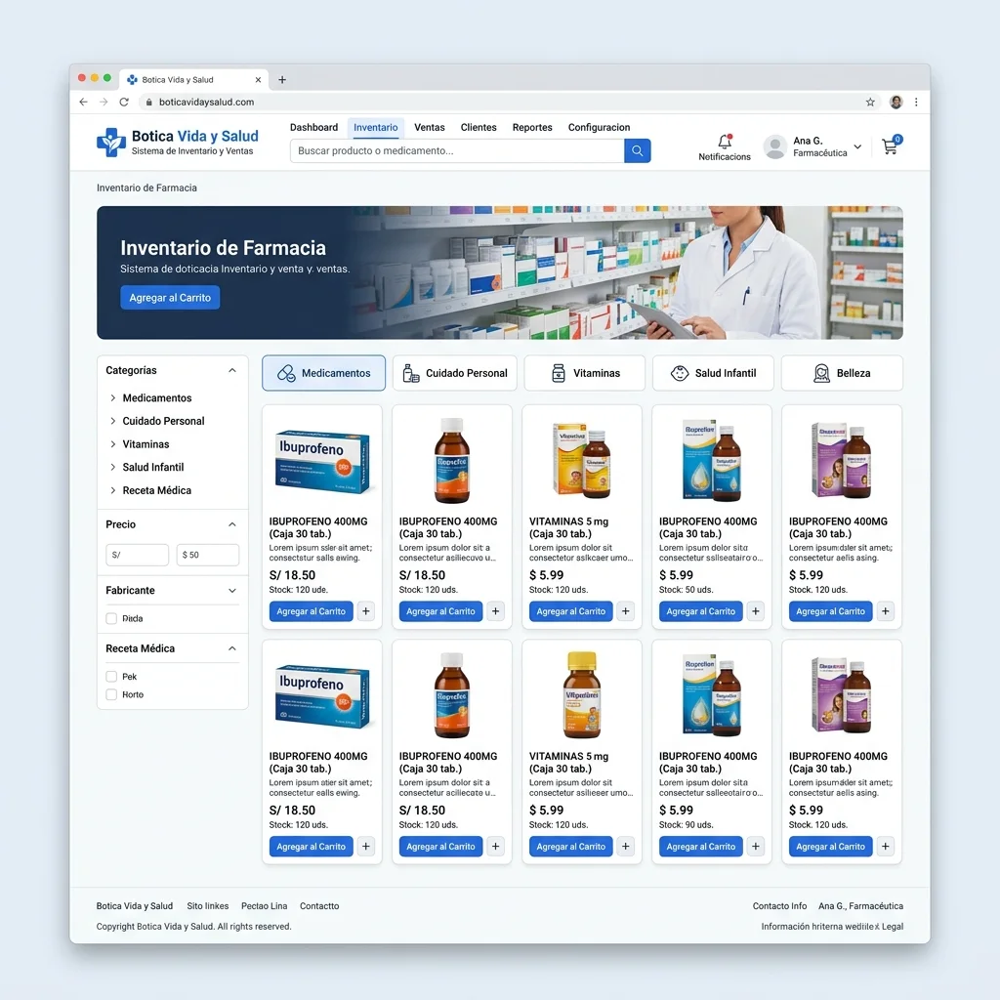

Optimización y formateo de laptop
Recupera velocidad, estabilidad y un entorno listo para trabajar.
Resultado Diagnóstico, configuración y programas esenciales.
KZ / 00 Taller digital · Perú
Convertimos tus ideas en sitios web que venden, sistemas que organizan, procesos que avanzan y experiencias que conectan.
Soy Paul Medina. Diseño y construyo herramientas digitales claras para negocios que necesitan avanzar sin sumar complejidad.
KZ / 01 Servicios
Cada servicio empieza con un alcance claro. Definimos qué se entrega, cuánto tarda y qué costos externos requiere antes de construir.

Recupera velocidad, estabilidad y un entorno listo para trabajar.
Resultado Diagnóstico, configuración y programas esenciales.

Presenta tu oferta con claridad y convierte visitas en consultas.
Resultado Web adaptable, contacto directo y publicación.
Organiza productos en un enlace simple de consultar y compartir.
Resultado Catálogo web, código QR y pedidos por WhatsApp.

Ordena ventas, inventario, clientes o reservas con un flujo propio.
Resultado Sistema a medida, reportes y capacitación.

Reduce pasos repetitivos y mejora el seguimiento de tu proceso.
Resultado Flujo automatizado, pruebas y guía de uso.
Comunica productos, promociones y novedades con coherencia visual.
Resultado Publicaciones, video corto y formatos para redes.
Reúne proyectos, experiencia y contacto en un enlace profesional.
Resultado Diseño personal, versión móvil y publicación.

Aplica herramientas de IA a tareas reales de estudio o trabajo.
Resultado Sesión personalizada, práctica y recursos.
KZ / 02 Archivo de proyectos
Selecciona un proyecto para revisar su objetivo, alcance y decisiones principales. Cada ficha utiliza material real del producto.

En producciónSistema farmacéutico para gestionar inventario, ventas y disponibilidad incluso cuando la conexión no es estable.
KZ / 03 Método de trabajo
Avanzamos por entregas visibles para validar temprano y evitar semanas de trabajo sobre una idea equivocada.
Objetivo, usuario, problema y restricciones reales.
Alcance, entregables, tecnología, tiempo y costos.
Diseño y desarrollo mediante avances comprobables.
Publicación, capacitación y siguiente ciclo de mejora.
KZ / 04 Tecnologías utilizadas
KZ / 05 Registro de avances
Sistema visual metálico, archivo interactivo de proyectos y narrativa de casos.
Inventario farmacéutico, ventas y operación sin conexión.
Web comercial y herramienta interna para inventario.
KZ / 06 La persona detrás del sistema
Estudiante de Ingeniería de Sistemas · Fundador de Kzaly Group
Trabajo directamente contigo desde la primera conversación hasta la entrega. Busco soluciones claras, mantenibles y ajustadas a la realidad de cada negocio.
KZ / 07 Nueva conexión
Una conversación breve basta para entender el objetivo, plantear un alcance realista y darte un precio concreto.